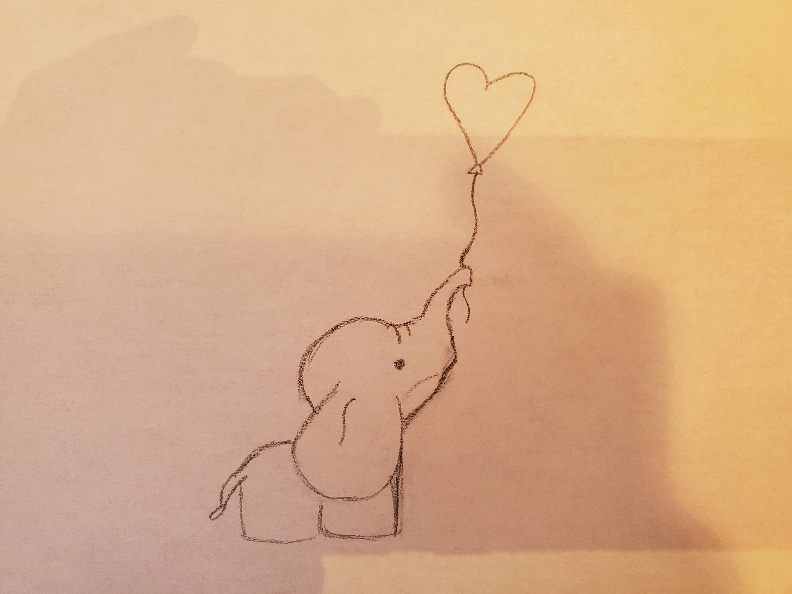
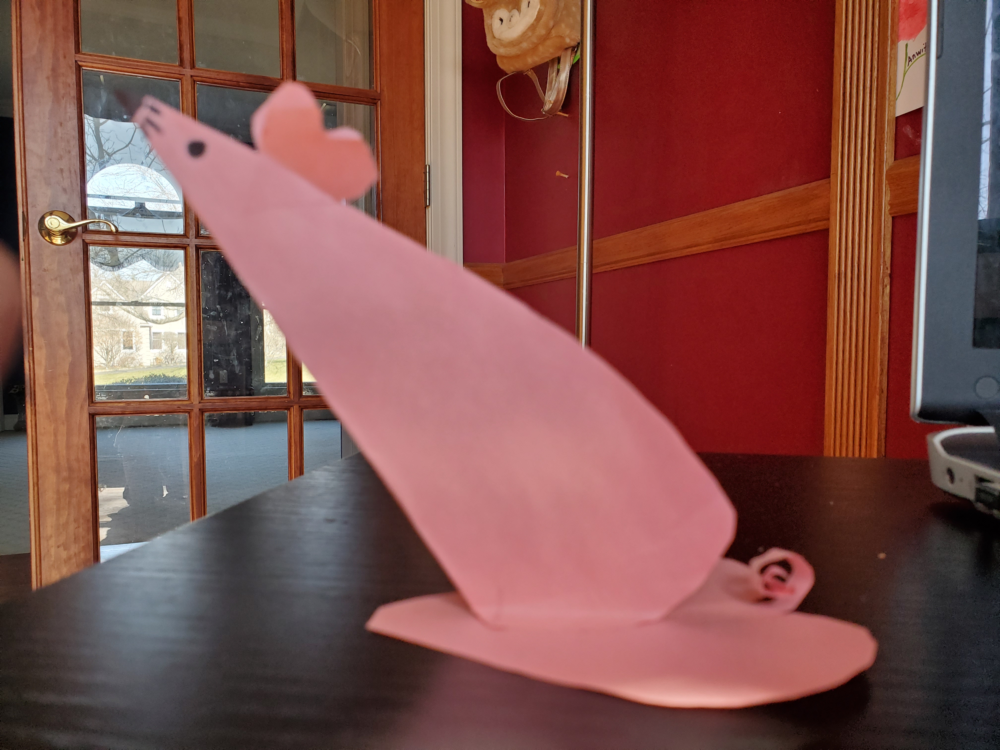
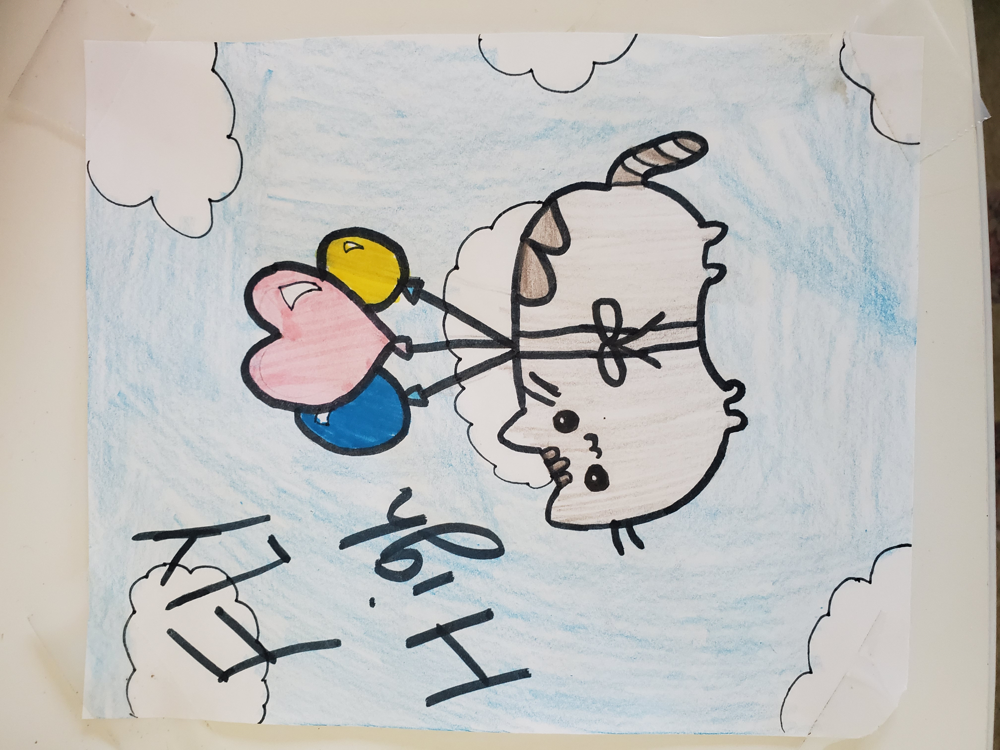
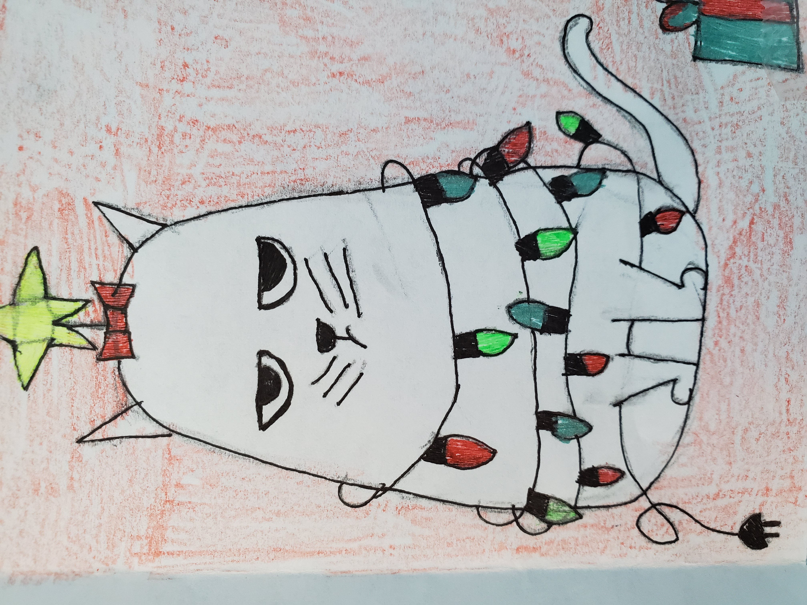
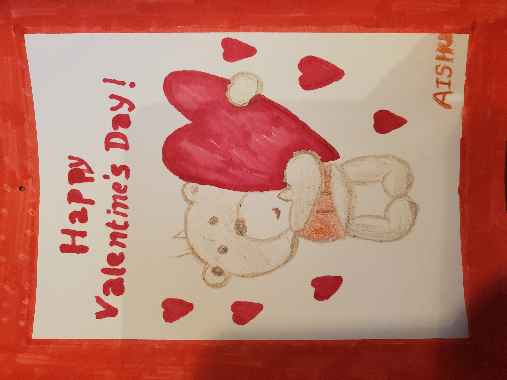
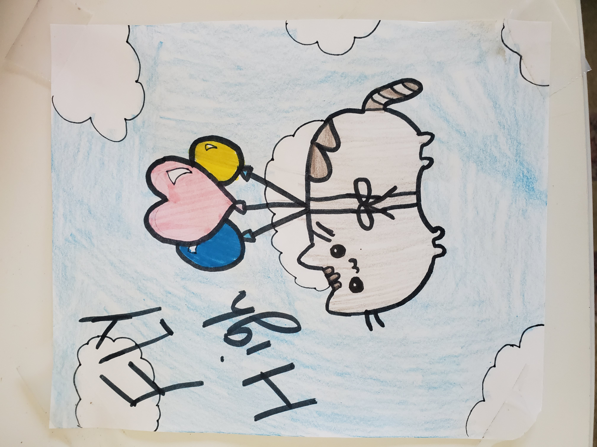
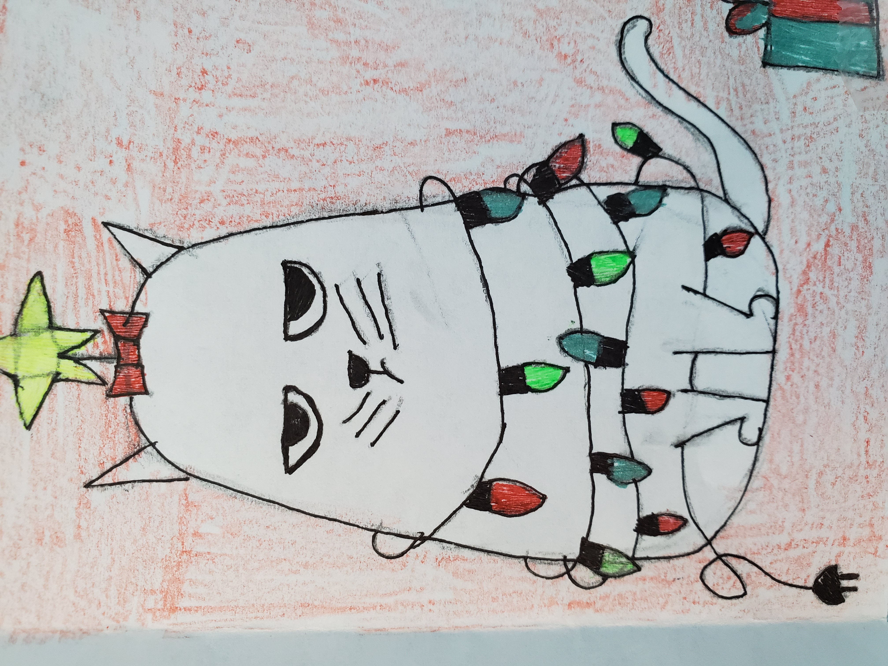
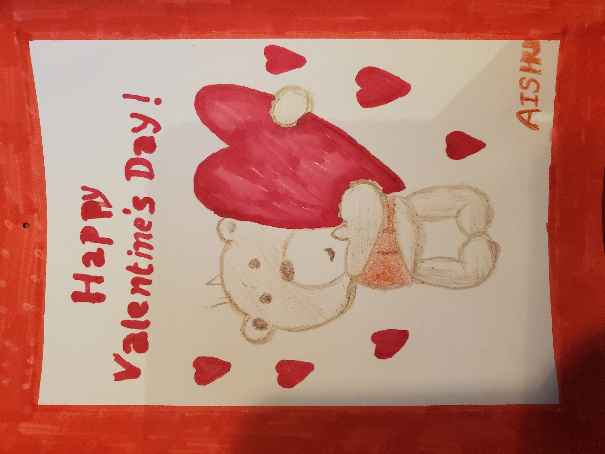

Drawing
My Favorite Hobby
Drawing is a great way for me to express myself in pictures. I can use my imagination and creativity without any limitations. Whenever I'm tired or bored, I immediately pick up my pen and draw to feel relaxed and not stressed. I mostly draw things in the style of kawaii. Kawaii is a form of art which makes any normal object cuter and friendlier, normally by giving it human characteristics, such as eyes, mouths, or activities a human might do. Drawing is scientifically said to have benefits for the brain, too. When drawing, people release a hormone called endorphins, which plays a key role in causing happiness. When drawing, you also use your right and left side of the brain: the right side of the brain monitors your logic, while the left side of the brain monitors creativity. Both of these come into play at the same time when
drawing. Drawing is a great way to relax and express yourself!
My Inspiration
My biggest inspiration comes from one famous kawaii artist: Claire Belton. She created the beloved character named, "Pusheen", who could charm anyone! Pusheen was first created as a simple cartoon character for a website called everydaycute.com. Pusheen became so popular that she even has her own merchandise and cafe in Singapore! Claire Belton started out really small with just simple drawings and cartoons, but they hooked the hearts of many, and now, they are one of the most popular GIFS!


My Favorite Artist
My favorite artist is Johannes Vermeer. Johannes Vermeer is a famous Dutch Baroque Peiriod painter who made paintings of everyday life. His most famous painting are: Girl with a Pearl Earring, The Milkmaid, The Art of Painting, and the View of Delft. Thse paintings are sold for about 40 million dollars each! This may be because his paintings are so realistic, and he captures light in a whole different way. His paintings are sincerely detailed and made with the finest paints.


My Drawings


 




